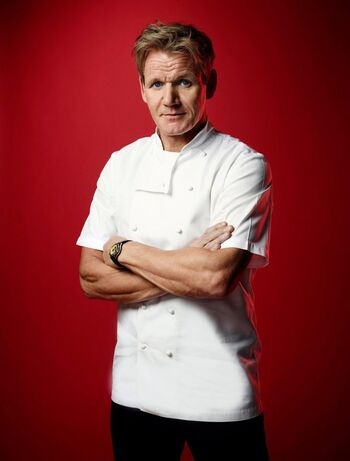

Nuestro Chef
Les presentamos a Rodrigo Gordom Ticona, egresado con honores del prestigioso Instituto Argentino Gastronómico (conocido como el IAG). Joven visionario de 25 años el cual se propuso a llevar a cabo su propio negocio, el cual llevo a cabo con tanto esfuerzo y dedicación. Hoy en día proporcionamos los caterings más personalizados para tu sesión de fotografía, rodaje, filmación e incluso cualquier tipo de evento cinematográfico que propongas. Nuestro objetivo es que no te preocupes de la comida, eso déjanoslo a nosotros.
Nuestro objetivo es que no te preocupes de la comida, eso déjanoslo a nosotros.
Acompañado del mejor equipo para el servicio estamos dispuestos a dejarte la panza llena y el corazón contento para que tu sesión sea inolvidable y no te preocupes por la cena en cuanto llegues a tu casa.
Comenzamos con este emprendimiento hace ya más de 6 años, en los cuales, ya hemos trabajado con varias marcas reconocidas y muchos clientes satisfechos, los cuales, obviamente, nos siguen llamando para seguir probando nuestras delicias. Así que, ¿Qué estas esperando?